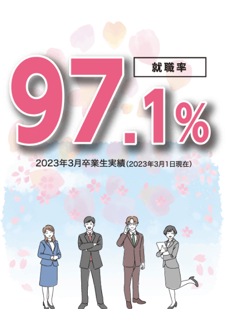

資格サポート
充実した“サポート体制”でじっくり技術＆知識が身につきます 情報未来の「学びの特色」 日々進化を続けるIT業界において、必要とされる技術や知識の変遷も非常に速くなっています。 本校ではこうした時代の波に合わせたカリキュラム編成をすると同時に、システム開発・AI・CG・ゲー ムの各分野の土台となる基礎知識の習得にも力を入れているため、初心者の方でも安心して学ぶことができます。
入学時からはじまる“実践教育”
近い将来働く職場で日常的に求められるITスキルを、実際に業界の最前線で活躍されている先生方
から、日々の授業内で学ぶことができます。在学期間中、授業の総時間数の約70％が「演習＆実習授業」となりますので、初心者でも無理なく学べます。
“担任制”だからきめ細かな指導が可能
日々の授業は、担任の先生が学生全員の「顔」をみながら進行 していきます。分からない点は先生に気軽に質問して、その日のうちに解決できるため、安心して技術＆知識を深めることが可能です。
学生個々の夢を叶える“カリキュラム”
本校ではコンピュータやプログラミングの基礎科目を、１年次に全員が学び２年次に繋げます。２年次以降はシステム開発・AI・CG・ゲームをより専門的に学習。本校であれば、じっくり学んで「ITやゲーム業界で活躍したい！」という夢が叶います。
同じ夢をもつ“仲間”がいます
IT業界において技術＆知識と同じくらい大切なのが「コミュニケーション能力」。ひとつのシステムやゲームを完成させる上では、多数のプロジェクトメンバーとのやり取りが必要となりますが、本校では入学直後から先輩・後輩の垣根を超えた学内イベント等によって、自然とその力を養うことができます。
情報未来でめざせる資格
＜国家資格＞
ITシステムエンジニア学科
インフォメーションテクノロジー学科
●「Lv1」～「Lv4」は、各国家試験の難易度をあらわしています（Lv4→最難関資格）
ITシステムエンジニア学科
インフォメーションテクノロジー学科
※「ベンダー資格」とは、IT業界内で使用されているソフト等を製造している企業（ベンダー）が認定する資格。 実践的レベルにおける技能が証明される資格のため、国家試験同等の権威があり、就職活動にも活かされます。
国家試験
在学期間中に「国家資格」取得もめざせます 情報処理技術者試験とは？
IT業界でもっとも注目される資格試験といえば、「情報処理技術者試験」です。これは「情報処理の促進に関する法律」に基づき経済産業省が認定している国家試験です。
〈主な試験〉
□情報処理安全確保支援士試験□エンベデットシステムスペシャリスト試験
□データベーススペシャリスト試験□ネットワークスペシャリスト試験
□応用情報技術者試験□基本情報技術者試験□情報セキュリティマネジメント試験
□ITパスポート試験
本校は“国家試験免除校”です
本校では「基本情報技術者試験」において、試験センターにより定められた授業を修了することにより、午前試験が免除となる「修了試験」を受けることが可能となります。この試験に合格できれば、基本情報技術者試験当日は、午後に実施される「技術試験」のみ受験することとなりますので、合格できる可能性が一気に広がります。

※一般受験者はこの「午前試験免除修了試験」が受験できないため、試験当日は技術試験と合わせて、午前中に知識試験も受験することになります。
情報未来の資格試験サポート
資格取得は、「目標に向かって努力できる人物である」という客観的な証明となります。そのため就職活動に有利となるだけでなく、取得者本人にとっても「自信」に繋がりますので、本校でも資格取得を推奨しています。
資格取得の目標
国家資格Lv1～Lv4のいずれかの取得
希望分野に関連するベンダー資格の取得
資格取得のサポート
①「情報処理試験対策講座」の実施
毎年3月・9月に基本情報技術者試験の午後試験対策を実施。過去問題等を分析したポイント学習により、確実に国家試験に合格できる答案作成力を身につけます。
②日々の授業内で試験対策を網羅
取得をめざす資格の対策は、日々のカリキュラム内でおこないますので、無理なく合格レベルまで技術＆知識を引き上げることが可能です。
③検定試験料の「割引制度」
ベンダー資格であるサーティファイ各種検定試験等においては、割引価格で受験できますので、積極的にチャレンジすることができます。
※一般受験者はこの「午前試験免除修了試験」が受験できないため、試験当日は技術試験と合わせて、午前中に知識試験も受験することになります。
情報未来の資格試験サポート 資格取得は、「目標に向かって努力できる人物である」という客観的な証明となります。そのため就職活動に有利となるだけでなく、取得者本人にとっても「自信」に繋がりますので、本校でも資格取得を推奨しています。 資格取得の目標 国家資格Lv1～Lv4のいずれかの取得 希望分野に関連するベンダー資格の取得 資格取得のサポート ①「情報処理試験対策講座」の実施 毎年3月・9月に基本情報技術者試験の午後試験対策を実施。過去問題等を分析したポイント学習により、確実に国家試験に合格できる答案作成力を身につけます。 ②日々の授業内で試験対策を網羅 取得をめざす資格の対策は、日々のカリキュラム内でおこないますので、無理なく合格レベルまで技術＆知識を引き上げることが可能です。 ③検定試験料の「割引制度」 ベンダー資格であるサーティファイ各種検定試験等においては、割引価格で受験できますので、積極的にチャレンジすることができます。

主な内定先企業（順不同） ※2019年度～2021年度 抜粋
ＴＤＣソフト㈱
（株）流研
マルワ電子サービス（株）
（株）ＰＩＰＥＬＩＮＥ
（株）システムブレイン
（株）エクサネットＨＡＬ
日本データスキル（株）
日本ＳＥ（株）
（株）電子工学センター
（株）システムサポートサーブ
ビットスター（株）
横須賀ソフトウェア（株）
（株）アイ・ジー・エス
アイ・ティ・エス（株）
（株）ジャパンテクニカルソフトウェア
日本ソフトウェアインダストリ（株）
横須賀ソフトウェア(株)
他 多数
情報未来が就職に強い“４つのポイント”
求人企業からの“高い評価”
約50年にわたり北海道のIT専門学校をリードしてきた本校。その伝統と実績が道内外の企業より高い評価を受けています。現在もIT業界で活躍するOBが多数おり、そのパイプを活かした就職情報をタイムリーに学生へフィードバックしています。
紹介する求人はすべて“正社員”採用
IT業界各社から毎年多数の求人をいただいていますが、学生に紹介する求人はすべて「正社員採用」企業です。中には本校学生に対する「指定枠求人」もあり、入社後も安心して働ける環境を、本校では学生達に提供しています。
先生達が全力でサポートします
初めて就職活動を経験する学生が多い中、本校では担任＆就職担当の先生を中心に、学生一人ひとりの夢が叶うよう、全力でサポートします。不安な事があっても、先生に相談すると的確にアドバイスをしてくれますので、安心して就職活動に臨むことができます。
“就職情報”がぎっしり詰まった専用教室
本校の2階にある“キャリアセンター”には、これまで企業よりいただいた求人票や、卒業生の就活レポート等が多数保管されています。過去の採用試験の問題や質問事項などの情報を事前に得ることができ、万全の準備で試験に挑むことができます。
「コミュニケーション基礎」授業 【1年次4月】
入学直後から、１年後に本格化する就職活動に活かせるように、自己の表現方法やプレゼンの仕方、コミュニケーション技術を学びながら、少しずつ就職活動の準備をしていきます。
担任の先生との個別面談 【1年次6月】
本校では入学後から担任の先生による個別面談によって、学生一人ひとりと就職内定に向けた方向性を設定していきます。保護者とも連携を図り、個々の夢の実現に向けてサポートしていきます。
「コミュニケーション応用」授業 【1年次10月】
学校生活に慣れてきた頃から「自己分析」や「履歴書作成」をスタートし、「業界リサーチ・企業選定」「時事研究」「筆記＆面接試験対策」等、段階を踏んで就職活動本番に備えていきます。
就職活動スタート 【2年次4月】
就職活動がいよいよスタート。就職内定獲得に向けて、本校学生だけが対象の「学内企業説明会」や、道内外のIT企業が多数参加する「合同企業説明会」に参加をして、希望企業への就職内定をめざします。